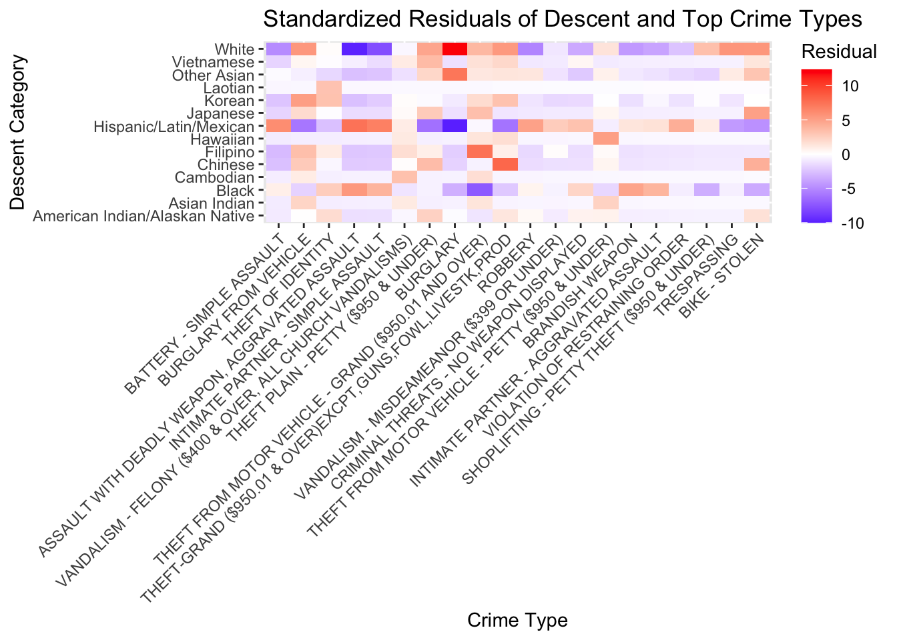
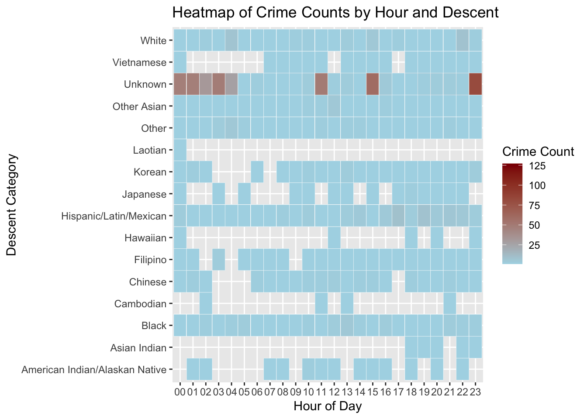
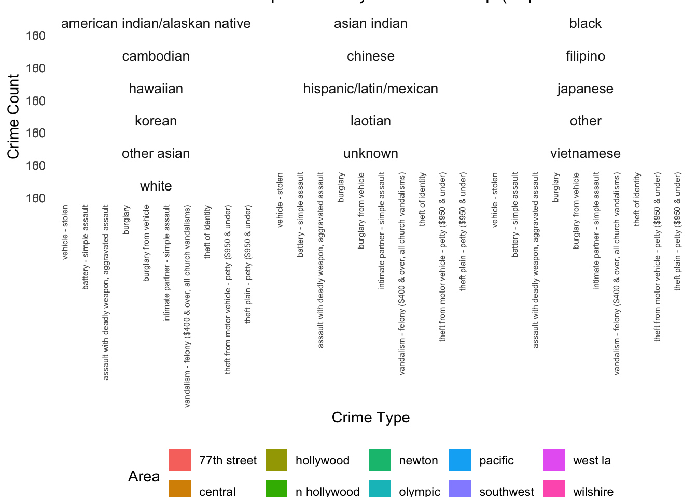

here() starts at /Users/seanfung/Documents/BU Fall 2024/MA 415/MA 415 G4 Final Project
data <-readRDS(here("filtered_data_2.rds"))filtered_data <-subset(data, Descent_Description !="Unknown"& Descent_Description !="Other")# Create a contingency table for the filtered datacrime_table_filtered <-table(filtered_data$Descent_Description, filtered_data$Crm.Cd.Desc)chi_test_filtered <-chisq.test(crime_table_filtered)
Warning in chisq.test(crime_table_filtered): Chi-squared approximation may be
incorrect
# Extract standardized residualsstandardized_residuals_filtered <- chi_test_filtered$stdrestop_crimes <-names(sort(colSums(crime_table_filtered), decreasing =TRUE))[1:20]# Filter the contingency table to only include top crime typescrime_table_top <- crime_table_filtered[, top_crimes]chi_test_top <-chisq.test(crime_table_top)
Warning in chisq.test(crime_table_top): Chi-squared approximation may be
incorrect
standardized_residuals_top <- chi_test_top$stdresresiduals_top_df <-as.data.frame(as.table(standardized_residuals_top))colnames(residuals_top_df) <-c("Descent", "Crime_Type", "Residual")ggplot(residuals_top_df, aes(x = Crime_Type, y = Descent, fill = Residual)) +geom_tile() +scale_fill_gradient2(low ="blue", mid ="white", high ="red", midpoint =0) +labs(title ="Standardized Residuals of Descent and Top Crime Types",x ="Crime Type", y ="Descent Category", fill ="Residual") +theme(axis.text.x =element_text(angle =45, hjust =1))

I wanted to ask the question of whether every crime was correlated to descent. Therefore, I conducted a chi-squared test and wanted to see how each race’s residual was in comparison to the top 10 crimes (all crimes would be too much). - We can see that “White” had a high residual in the burglary category and higher residuals in some other categories as well. We also see lower than average residuals in the aggrevated assault and simple assault categories. - As for Hispanic/Mexican, even though they represent such a high amount of crimes (as seen in last blog post), they are moderately around what is expected with the exception of the “Burglary” and “Theft (under $950) categories. - Other Asian slightly higher in”Burglary” - “Black” lower in “theft from motor vehicle”. - “Filipino” higher in “theft from motor vehicle”. - “Chinese” higher in “theft - grand except guns or livestock”. - Everything else is mostly the same hovering around the expected with small fluctuations.
library(dplyr)
Attaching package: 'dplyr'
The following objects are masked from 'package:stats':
filter, lag
The following objects are masked from 'package:base':
intersect, setdiff, setequal, union
crime_hour_descent <- data %>%group_by(Hour, Crm.Cd.Desc, Descent_Description) %>%summarise(Count =n(), .groups ="drop") %>%filter(Count >0)ggplot(crime_hour_descent, aes(x = Hour, y = Descent_Description, fill = Count)) +geom_tile(color ="white") +scale_fill_gradient(low ="lightblue", high ="darkred", name ="Crime Count") +labs(title ="Heatmap of Crime Counts by Hour and Descent",x ="Hour of Day",y ="Descent Category")

I make this plot to visualize how crime frequency varies for each descent category by time of the day. I use heatmap since it provides a direct comparison across different times and descents. This plot clearly shows that certain racial categories, such as White, Hispanic/Latin/Mexican, and Black, experience higher crime rates compared to racial groups like Cambodian and Laotian, potentially due to smaller sample sizes or data collection biases.
The general trend across most categories indicates a peak in crime rates from late evening to early morning (00:00 to 05:00), which is the same as what we expected. However, an additional peak occurs during daytime (10:00 to 15:00), which is unusual and needs further investigation.
library(dplyr)library(here)crime_data <-readRDS(here("filtered_data_2.rds")) %>%mutate(across(c(AREA.NAME, Crm.Cd.Desc, Descent_Description), ~trimws(tolower(.))))crime_area_descent_summary <- crime_data %>%count(AREA.NAME, Crm.Cd.Desc, Descent_Description, name ="Crime_Count")# Get top 10 areas and crimestop_10_areas <- crime_area_descent_summary %>%count(AREA.NAME, wt = Crime_Count, sort =TRUE) %>%slice_head(n =10) %>%pull(AREA.NAME)top_10_crimes <- crime_area_descent_summary %>%count(Crm.Cd.Desc, wt = Crime_Count, sort =TRUE) %>%slice_head(n =10) %>%pull(Crm.Cd.Desc)filtered_data <- crime_area_descent_summary %>%filter(AREA.NAME %in% top_10_areas, Crm.Cd.Desc %in% top_10_crimes)# Chi-square test for Crime Type vs. Areacrime_type_area<-xtabs(Crime_Count ~ Crm.Cd.Desc + AREA.NAME, data = filtered_data)chi_test_crime_area <-chisq.test(crime_type_area)print("Chi-Square Test Result: Crime Type vs. Area")
# Chi-square test for Descent Group vs. Areadescent_area <-xtabs(Crime_Count ~ Descent_Description + AREA.NAME, data = filtered_data)chi_test_descent_area <-chisq.test(descent_area)
Warning in chisq.test(descent_area): Chi-squared approximation may be incorrect
print("Chi-Square Test Result: Descent Group vs. Area")
[1] "Chi-Square Test Result: Descent Group vs. Area"
both of the chi-square tests have low p-value, indicating that the variables are statistically associated. With the chi-sqaure test on crime type - descent group, I wanted to understand the distribution across these three variables at once.
library(dplyr)library(ggplot2)# Plotggplot(filtered_data, aes(x =reorder(Crm.Cd.Desc, -Crime_Count), y = Crime_Count, fill = AREA.NAME)) +geom_bar(stat ="identity", position ="dodge") +facet_wrap(~ Descent_Description, ncol =3) +labs(title ="Most Prevalent Area for Top Crimes by Descent Group (Top 10 Areas and Crimes)",x ="Crime Type",y ="Crime Count",fill ="Area" ) +theme_minimal() +theme(axis.text.x =element_text(angle =90, vjust =0.5, hjust =1, size =6),strip.text =element_text(size =10),legend.position ="bottom" )

This graph shows the distributions across crime types, geographic areas, and descent groups within the top 10 most frequent crime types and top 10 areas(it’s actually 11 areas in the graph: ‘hollywood’ and ’ n hollywood’ are counted as separate entries) with the highest crime counts. Here are some key patterns from the graph: noted that some descent groups, like Black, Hispanic/Latin/Mexican, and White, experienced a wider range of crime types across multiple areas, whereas others had more limited exposure. Certain areas, such as 77th Street, Central, and Southwest, consistently showed high counts across multiple crime types, showing that they are hopspts for various types of crime. Last but not least, vehicle theft, simple assault, and petty theft were widespread acroos areas and descent groups.